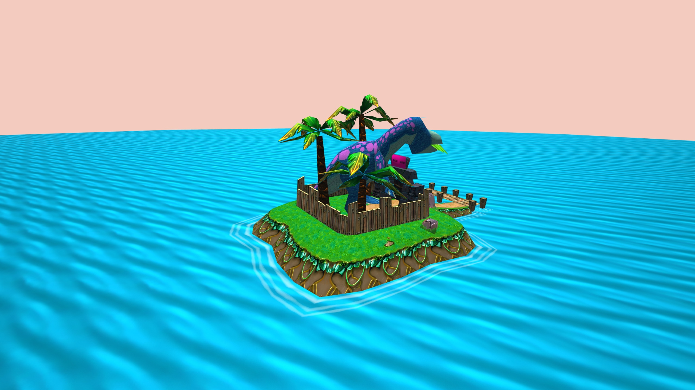
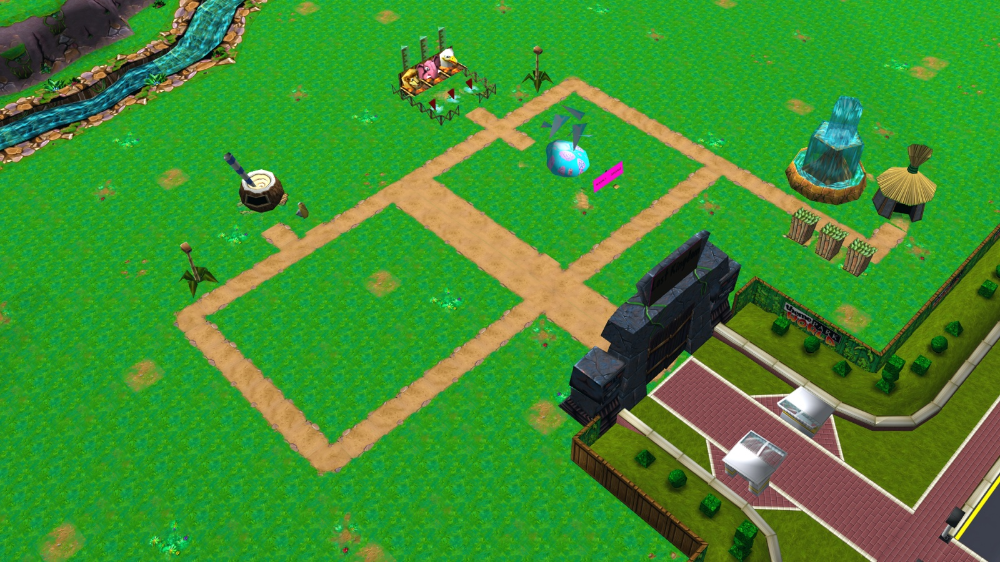
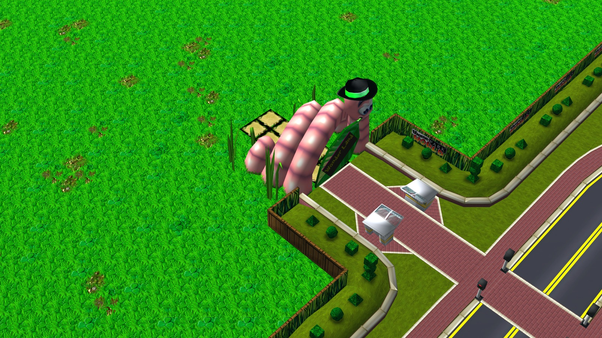
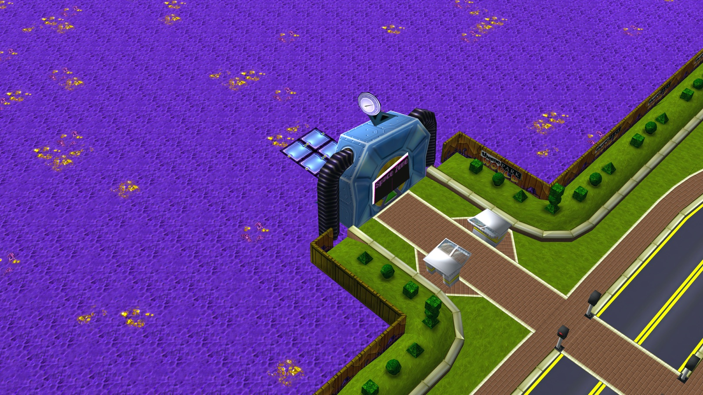
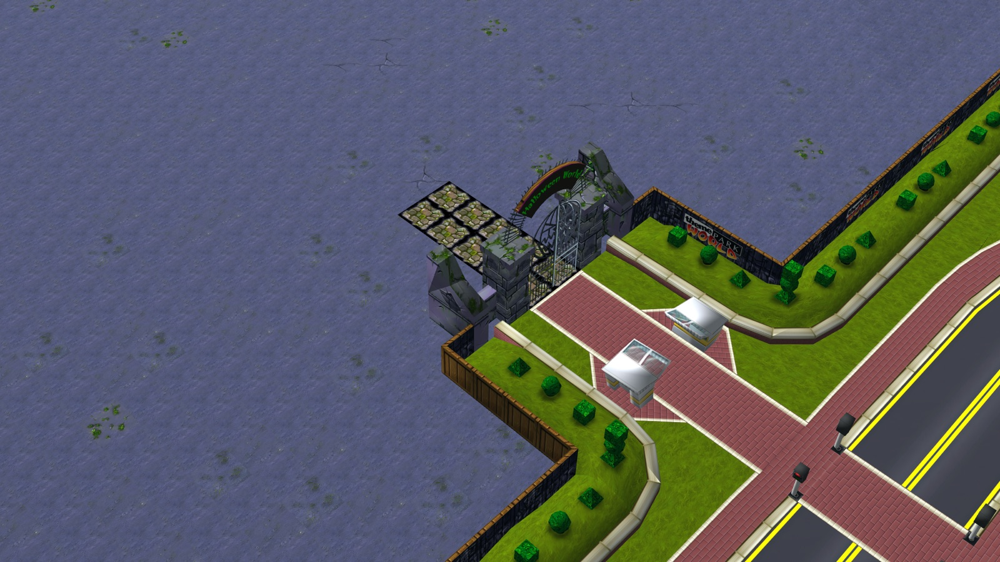

Theme Park World, built for today
OpenTPW is a free, open-source reimplementation of the 1999 theme park game. Bring your own copy of Theme Park World and play it on modern Windows, macOS and Linux, in high resolution, or right in your browser.
Needs the files of an original Theme Park World installation or CD. Why?
The park you remember, on the computer you have
OpenTPW reads the original game's data and runs it with a new engine. The behaviour is traced from the original game, and every place where OpenTPW has to guess is written down.
Modern systems
Native builds for Windows (x64, x86, ARM64), macOS on Apple silicon and Linux (x64, ARM64). No compatibility tricks.
Sharp at any size
Any resolution and aspect ratio, from a laptop to 4K and ultrawide, with the original interface scaled cleanly.
Enhanced textures
An optional texture pack, upscaled on your own computer from your own copy, makes the parks four times as detailed.
Play in the browser
The same engine compiled to WebAssembly and WebGL2. Choose your game folder and play: nothing is installed, and your files stay on your computer.
Online again
Share parks, visit other players' parks, send postcards and chat, on the official server or one you host yourself.
Open source
MIT licensed and developed in the open on GitHub. Bug reports, research and code are welcome.
Screenshots
OpenTPW running with original game data and the optional enhanced texture pack, rendered at 4K and scaled down.




Download
The latest release for your system. Unpack it and start OpenTPW; on the first start it asks for your Theme Park World folder. Release notes and older versions
OpenTPW is a development preview: much of the original already works, and some parts are still missing or approximate. The progress notes say what works today.
Theme Park World online, again
The original's online world closed long ago. OpenTPW brings it back with its own open server.
- Publish your park and visit parks other players made
- Send postcards to friends
- Chat with the original's commands and moods
- Delete your account and everything on the server at any time
Please read the community rules and the privacy statement.
From the online world
News from the official server, and the most-voted parks whose builders chose to show them here.
Game news
System news
Top parks
Questions
Do I need the original game?
Yes. OpenTPW is a new engine, not the game itself: it contains none of the original's graphics, sounds or other files, and it needs them from your own copy of Theme Park World (for example the PC CD or an installed copy).
Does the browser version upload my game files?
No. The page copies the files it needs from the folder you choose into your browser's memory. They are never sent to a server, and they are gone when you close the page.
Is OpenTPW made by EA or Bullfrog?
No. OpenTPW is an independent fan project, not affiliated with or endorsed by Electronic Arts or Bullfrog Productions.
How faithful is it?
The aim is to behave like the original. Behaviour is traced from the original game, and every place where OpenTPW still has to guess is listed in a public register, so it can be checked and improved.
How can I help?
Play it and report what differs from the original, help with research, or contribute code on GitHub.